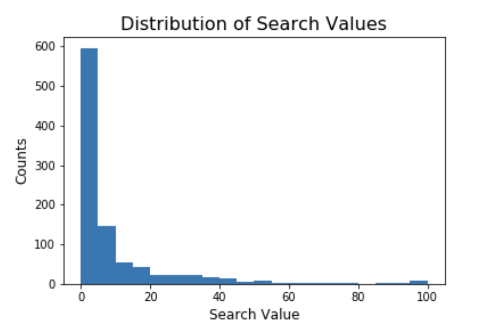
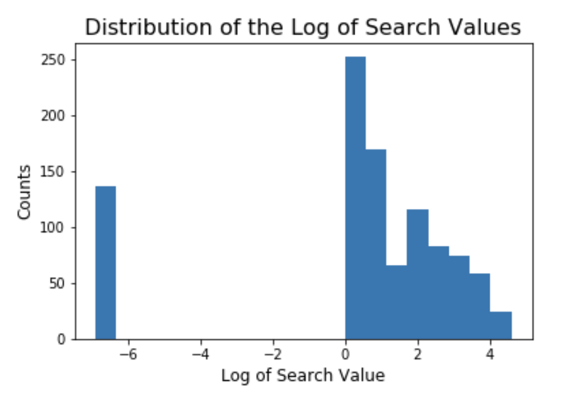
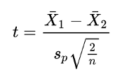
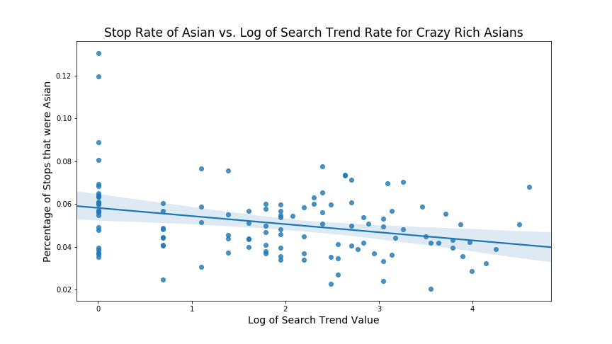
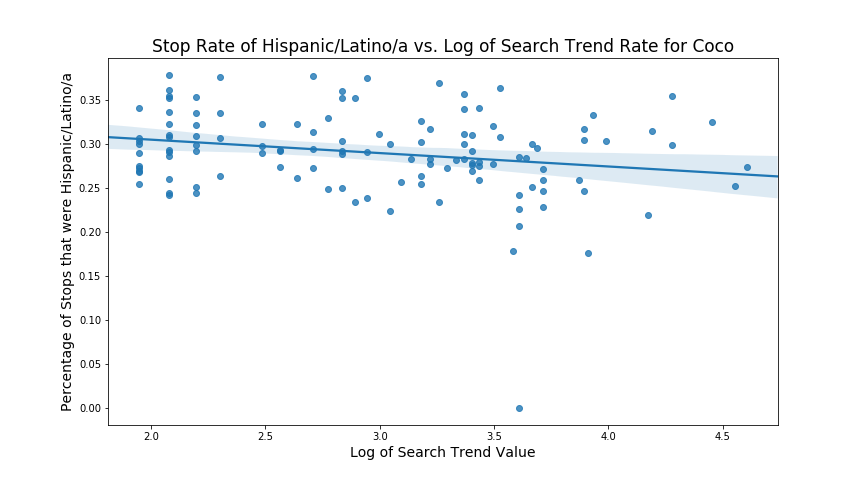
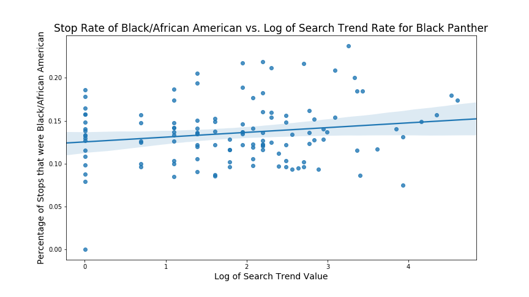
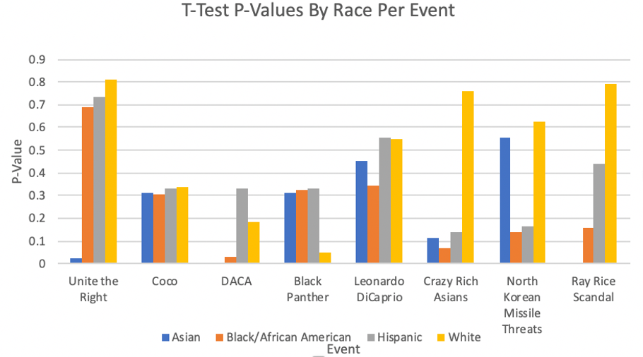
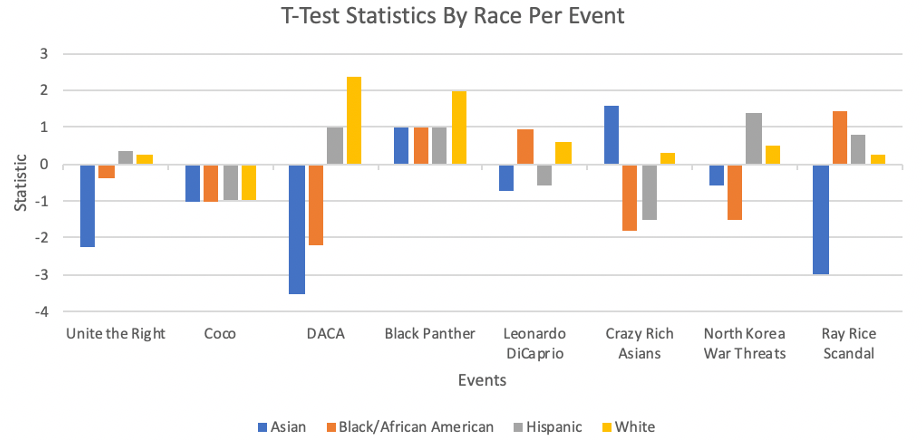
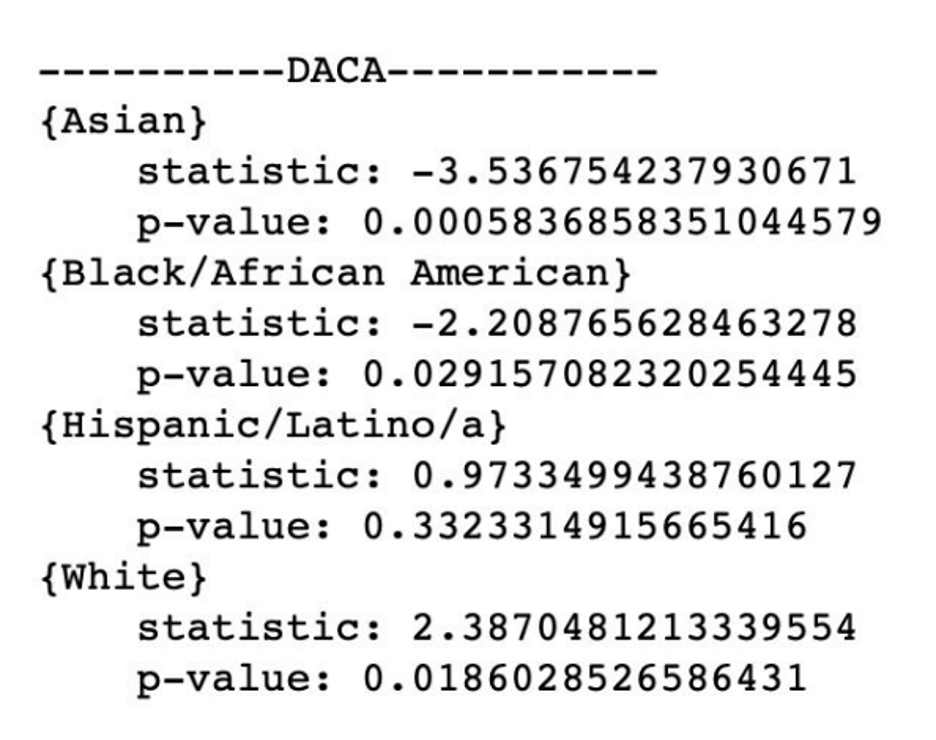
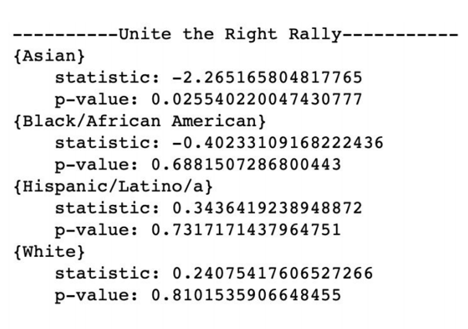

For this project, we had several different approaches that we used in order to assess the relationship between the media and stop rates by race. We decided to approach these effects in three ways: short-term effect, long-term effect, and regional effect.
When looking at the effect that search value had on stop rates, it seemed pertinent to first look at the short term impact. In order to do this, we took each event and plotted how the stop rate for its associated race changed given the search trend value for that day. However, we initially ran into an issue regarding the search trend values, in that there were very few entries over 5,
and so the larger numbers above 70 were skewing the results more than they should. While initially considering removing these larger outliers, these large numbers did represent the highest peaks in interest of each event, and so removing them would remove possibly the most important days in the dataset. Therefore, we instead took the log of each entry + 0.001:
and plotted and performed a simple Linear Regression against the log of that entry. In addition to this, we then performed a simple Linear Regression on this plot. While there were still issues with having mostly small values for the search values, now they aren't being outweighed as much, and while the scatter plots generally do not show high correlation, some do still have trends that can be analyzed linearly.
In order to see whether the media played a long-term role in race-related police stops, we wanted to take the t-tests of the proportion of race-related stops per day over the total number of stops in the day as compared to the number of Google Trends searches per day pre- and post- the event's occurrence. Since we had a four month period of Google Trends data, we took the stop rates from two months before the event and compared it to the stop rates in the two months following the event. The four month period of data encouraged us to use the t-tests as our long-term analysis on whether media played a role in race-related police stops.
The T-tests that we run are using the difference in means to see if there is a disparity in stop rates of specific races of drivers per event (i.e. White drivers for Leonardo DiCaprio's Oscars Speech, Hispanic drivers for the release of the movie, Coco) in the two months prior to the event occurring and in the two months post the event occurring. In order to do this, we will be using independent 2-sample t-tests because of the two different samples we are comparing (the two months prior to an event's occurrence and the two months post). The statistic being used is the difference of means and if the trend of stop rates from the prior two months existed, the difference of means between the two periods (pre- and post- the event) would be almost zero when it is normalized.
Where X1 is the mean for the two months prior to the event's occurrence and X2 is the mean for the two months post the event's occurrence
The numerator is calculated by isolating the four-month time period around the event and finding, for each service area, the number of stops of the targeted race dividing that by the total number of stops in that service area during that time. The denominator is produced by finding, for each service area, the number of residents of the targeted race and dividing that by the total number of residents in that service area. The resulting proportion gives us for each police beat, how a given race is stopped relative to the population of that race, and is also used for later analysis to investigate the change once the event occurs.
In the end, the results of the short-term analysis using regression were fairly inconclusive. While there were several events that did display a linear relationship between search values and stop rates, the results of these regressions were hardly consistent within race, nor within connotation. Take the figure below:
This is the graph for the relationship with the strongest correlation (-0.303): the time period surrounding Crazy Rich Asians. And while this relationship's coefficient (-0.004) is indeed fairly small, it may at first seem to indicate that for Asian drivers, their stop rates decrease slowly over time as an Asian related event picks up steam in the news cycle. However, the accuracy of this conclusion is thrown slightly off by its negative counterpart (North Korean Missile Threats), in which the relationship seems to be completely non-linear (correlation value of only 0.032).
Seeing this, we might then try to approach the problem from a connotation view, as it seems from the Crazy Rich Asians graph that stop rates go down as more people view positive race related media. However, while the graph below for Coco may support this argument:
with a correlation of -0.221 and a significantly larger slope of -0.015, the graph for Black Panther (correlation of 0.175) has the opposite result:
as it has a positive slope of .006. Note that for both hispanic and black drivers, neither of their negatively connotated events displayed linearity either, and the same went for both events for white drivers. Therefore, due to the lack of consistency in the slopes of these regression plots, as well as the lack of consistency in linearity, the results of the regression can not indicate either way whether or not the media impacts stop rates in the immediate short-term.
In order to do test the long-term effects of media on stop rates, we created the following independent 2-sample t-test hypotheses:
H0: Stop rates before and after race related events are the same by race.
H1: There is a difference in stop rates before and after the race-related event occurs by race.
In the end, the results of the long-term analysis using independent 2-sample t-tests were fairly inconclusive. While there were several events that did reject the null hypothesis, the results of these t-tests were hardly consistent within the same time period in accordance to other races. This means that during the same time period as an event's occurrence, there were other races with p-values less than 0.05, thus adding the abilitiy to have existing confounfing factors occurring, Take the figures below:
 Overall, the results were all over the place. Generally, positive events tended to fare better as compared to the negative events (as we can see from the above figures). Asian drivers tended to have the lower p-values and larger t statistic magnitudes whereas white drivers tended to have the higher p-values.
The results of this t-testing can be seen in Appendix C. We also calculated the stop rates of other races during each event's specific time frame to see whether there were confounding factors or not. For the most part, our results showed that there was no change in stop rates before and after race related events.
However, certain events such as seen in the figure above, the t-tests for the event DACA, illustrated that there was a difference in stop rates for the White, African-American and Asian drivers yet for the specific race (Hispanic drivers) that this event was chosen, there was no change in stop rates.
Similarly, the figure below shows that for the Unite the Right Rally, the stop rates for Asian drivers were the ones to change.
Although, all of our t-tests show that the null hypothesis was not rejected for the race the specific event occurred, there were still some confounding factors that affected certain races during the same time period as certain events like the Unite the Right Rally and DACA.
One reason that might cause certain races to have lower p-values may be that there are not enough drivers of the specific race during the events time frame (i.e. Hispanic drivers during the DACA time frame). In order to further our investigation, we also wanted to look at the stop rates in the year before the event occurred (if after 2014) or the year after the event occurred (if before 2018).
Holistically we can see that aroung the time black panther was realeased, there was a significant increase in the proportion. Delving a bit deeper, we can see that most of the with high magitutdes of change area in areas that had high proportions the year prior.In addition, Looking at the difference between the increases and decreases, it is also important to note that the African American population in eastern San Deigo is much higher than its western counterpart. We can then conclude that there is some relation the increases residing in areas that are not as densly populated with African Americans.
During the time around the release of Crazy Rich Asians. San Diego saw a general decrease in the stops of Asians in each service area. The most significant difference being in the service area that was most dense the year prior. The area showing growth is in La Jolla which is home to UCSD, a university populated with many international students. Since these students aren't part of the population calculated by the census, it as a area that skews the general results as many Asian students are on the road "invisible" in regards to the census.
The time aroudd the Unite the Right Rally told us somwthing interesting about how White drivers are being stopped. Looking at the baseline to the left, we can see that relative to each sevice area, white drivers are stopped at a consistant rate. When looking at at whether or not that changed, on the right, we saw very sligth changes. Compared to other race/event pairs, where we see at least one area that changes significantly, with the White/Unite the Right pairing the same cannot be said.